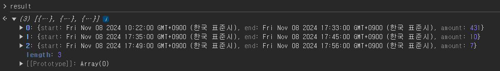
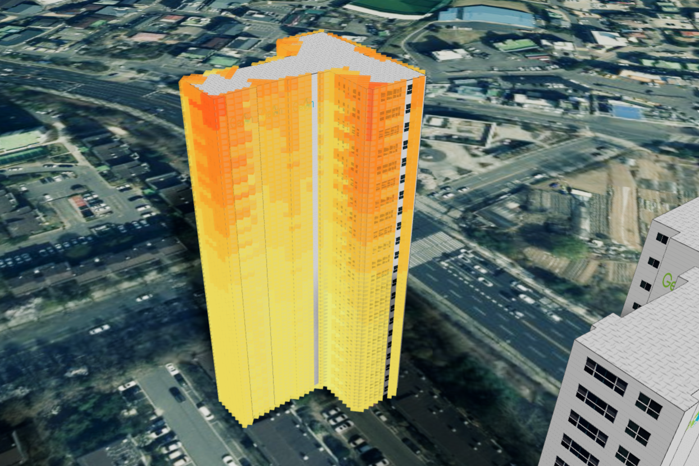
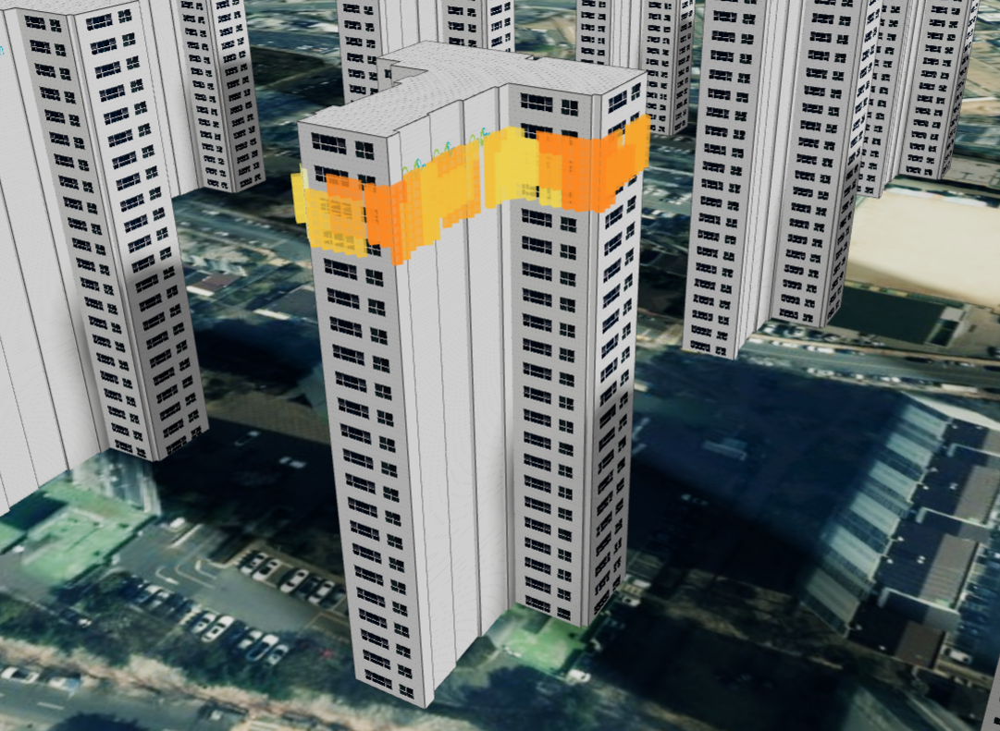

1. 일조권 분석 모드 시작하기
* 일조량 분석을 위해선 우선 3D 환경에서 태양 빛, 그림자를 사용하기 위해
일조권 모드를 활성
해야 합니다.
U3dApp.setSunShineMode() : 일조권 모드를 활성 API
app.setSunShineMode(true); //일조권 모드 Set
app.setTimeSun(now); // 현재 시간으로 세팅
2. 일조량 분석 모드 시작하기
U3dApp.analySunAmount(startTime, endTime, position, timeStep, drawOpt, distance)
: 일조량 분석을 수행하는 API
* drawOpt(일조량 분석 3D 가시화 옵션)의 자세한 내용은
3. 일조량 분석 결과 3D 가시화
항목을 참고해 주세요
startTimeDate : 일조량 분석 시작 시간 *필수 입력
endTimeDate : 일조량 분석 종료 시간 *필수 입력
positionvector : 일조량 분석 지점. 위경도 좌표 *필수 입력
timeStepnumber : 일조량 분석 수행 간격(분) 기본 값 1
drawOptobject : 일조량 분석 3D 가시화 옵션
distancenumber : 일조량 분석 수행 반경(m) 기본 값 5km
endTimeDate : 일조량 분석 종료 시간 *필수 입력
positionvector : 일조량 분석 지점. 위경도 좌표 *필수 입력
timeStepnumber : 일조량 분석 수행 간격(분) 기본 값 1
drawOptobject : 일조량 분석 3D 가시화 옵션
distancenumber : 일조량 분석 수행 반경(m) 기본 값 5km
// 일조량 분석 필수 파라미터
const startTime = new Date(2024, 11, 8, 6, 0); // 2024-11-08 6:00
const endTime = new Date(2024, 11, 8, 18, 0); // 2024-11-08 18:00
const position = {x: 126.92, y: 37.51, z: 116};
// 일조량 분석 옵션 파라미터 (필요에 따라 사용)
const timeStep = 1; // 1분 간격으로 분석 수행
const drawOpt = {isDraw : false} // 분석 결과 가시화 옵션
const distance = 5000; // 분석 수행 거리 (5km)
const result = app.analySunAmount(startTime, endTime, position, timeStep, drawOpt, distance);
* 일조량 분석 API는 return 값으로 각각의 분석 결과가 담긴 배열을 반환합니다.
* start : 일조 시작 시간 (해가 드는 시간)
* end : 일조 종료 시간 (그림자가 드는 시간)
* amount : 일조 시작 시간 부터 일조 종류 시간 까지의 일조량(분)
* start : 일조 시작 시간 (해가 드는 시간)
* end : 일조 종료 시간 (그림자가 드는 시간)
* amount : 일조 시작 시간 부터 일조 종류 시간 까지의 일조량(분)
const result = app.analySunAmount(startTime, endTime, position, timeStep, drawOpt, distance);
for(let data of result) {
const start = data.start;
const end = data.end;
const amount = data.amount;
console.log (`시작 시간 : ${start}, 종료 시간 : ${end}, 일조량 : ${amount});
}

3. 일조량 분석 결과 3D 가시화
* 일조량 분석 API 호출 시, 분석 가시화 옵션을 파라미터로 넣어 일조량 분석 결과를 사용자 범례에 따라 3D 화면 상에 가시화 할 수 있습니다.
* 3D 화면 상에 일조량을 가시화 할 때, N*N 큐브 형식으로 표출됩니다.
* 분석 가시화 옵션 값으로 isDraw(boolean), name(string), boxWidth(number), boxNum(number), styleFun(function)이 있습니다.
* 3D 화면 상에 일조량을 가시화 할 때, N*N 큐브 형식으로 표출됩니다.
* 분석 가시화 옵션 값으로 isDraw(boolean), name(string), boxWidth(number), boxNum(number), styleFun(function)이 있습니다.
isDrawboolean : 분석 결과를 3D상에 가시화 할 것인지 여부.
namestring : 3D 가시화 객체의 이름. 객체를 식별하는 데 사용된다. 미 기입 시 "분석지점 (객체 개수)번"이 기본 값으로 들어간다.
boxWidthnumber : 3D 가시화 객체(큐브)의 한 정육면체의 너비. 기본 값은 1
boxNumnumber : 3D 가시화 객체(큐브)의 정육면체 갯수. 기본 값은 6이고 6*6 큐브가 생성된다.
styleFunfunction : 사용자 범례를 지정 하는 함수
namestring : 3D 가시화 객체의 이름. 객체를 식별하는 데 사용된다. 미 기입 시 "분석지점 (객체 개수)번"이 기본 값으로 들어간다.
boxWidthnumber : 3D 가시화 객체(큐브)의 한 정육면체의 너비. 기본 값은 1
boxNumnumber : 3D 가시화 객체(큐브)의 정육면체 갯수. 기본 값은 6이고 6*6 큐브가 생성된다.
styleFunfunction : 사용자 범례를 지정 하는 함수
function userStyleFun ( cubeMesh, sunAmount) {
if(sunAmount > 600) {
return '#ff0000';
} else if (sunAmount <= 600 && sunAmount > 400) {
return '#ff8000';
} else if (sunAmount <= 400 && sunAmount > 200) {
return '#ffbf00';
} else {
return '#fff700';
}
}
const userDrawOption = {
isDraw : true,
name : "일조량 분석 1번"
boxWidth : 1,
boxNum : 10,
styleFun : userStyleFun
}
const result = app.analySunAmount(startTime, endTime, position, timeStep, userDrawOption, distance);


4. 일조량 분석 가시화 종료하기
* 일조량 분석 가시화를 종료하는 API는 app.endAnalySunAmount와 app.removeAnalySunAmount 두 가지가 있습니다.
U3dApp.endAnalySunAmount() : 그려진 가시화 객체(큐브)를 전체 제거하는 API
U3dApp.removeAnalySunAmount(meshName) : 파라미터로 가시화 객체(큐브)의 이름을 입력해 해당하는 이름의 큐브 하나만 제거하는 API
meshNamestring : 제거할 가시화 객체(큐브)의 이름. 분석 가시화 옵션의 "name" 값과 동일한 값
app.removeAnalySunAmount("일조량 분석 1번"); // 단일 제거
app.endAnalySunAmount(); // 전체 제거